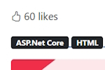

Create a new Domain Model named BlogPostLike.
public class BlogPostLike
{
public int Id { get; set; }
public int BlogPostId { get; set; }
public int UserId { get; set; }
}
In the BlogPost Domain Model add a new navigation property.
public ICollection<BlogPostLike> Likes { get; set; }
In The BlogDbContext.cs file add.
public DbSet<BlogPostLike> BlogPostLike { get; set; }
Do a new migration.
Add-Migration "Add BlogPostLike domain model." -Context BlogDbContext
Now create the Likes table in the database.
Update-Database -Context BlogDbContext
Install Bootstrap icons.
Get bootstrap Icons
Add the CDN link to our _Layout.cshtml page in the header section.
<link rel="stylesheet" href="https://cdn.jsdelivr.net/npm/bootstrap-icons@1.11.3/font/bootstrap-icons.min.css">
We want to use a thumbs up icon on our Details page. Find it on the Icons main page.
<i class="bi bi-hand-thumbs-up"></i>
Add it to a new Div on our page. We will add a number of likes.
<div class="mb-3">
<span><i class="bi bi-hand-thumbs-up"></i> 60 likes</span>
</div>
It looks like this.

There are a number of things we need to do.
click event.Now in the Code Behind class we will get the number of likes for an article from the database. First we need to create a IBlogPostLikeRepository interface in the Repository and an implementation class LikeRepository.
Add our first method into our IBlogPostLikeRepository interface.
public interface IBlogPostLikeRepository
{
Task<int> GetPostTotalLikes(int blogPostId);
}
Create an implementation of our interface method.
We also need a context to the database and to inject the services into our application.
In Program.cs add.
builder.Services.AddScoped<IBlogPostLikeRepository, BlogPostLikeRepository>();
Add your context to the BlogPostLikeRepository constructor and create your method implementation.
private readonly BlogDbContext blogDbContext;
public BlogPostLikeRepository(BlogDbContext blogDbContext)
{
this.blogDbContext = blogDbContext;
}
public async Task<int> GetTotalLikesForBlog(int blogPostId)
{
return await blogDbContext.BlogPostLike.CountAsync(x => x.BlogPostId == blogPostId);
}
We can now use this repository in our BlogPage\Details Code Behind class.
Inject the IBlogPostLikeRepository into our constructor. Add the number of likes for our Blog Post in the OnGet() method.
Create a new public property to store the likes named TotalLikes.
private readonly IBlogPostRepository blogPostRepository;
private readonly IBlogPostLikeRepository blogPostLikeRepository;
public int TotalLikes { get; set; }
public BlogPost BlogPost { get; set; }
public DetailsModel(IBlogPostRepository blogPostRepository, IBlogPostLikeRepository blogPostLikeRepository)
{
this.blogPostRepository = blogPostRepository;
this.blogPostLikeRepository = blogPostLikeRepository;
}
public async Task<IActionResult> OnGet(string urlHandle)
{
BlogPost = await blogPostRepository.GetAsync(urlHandle);
if (BlogPost != null)
{
TotalLikes = await likeRepository.GetPostTotalLikes(BlogPost.Id);
}
return Page();
}
We can now use TotalLikes in our Details page.
<span><i class="bi bi-hand-thumbs-up"></i> @Model.TotalLikes likes</span>
This should give us the total number of likes which will be 0 because we haven't added any likes yet.
We will add an anchor element as a button to our like span.
<span>
<a id="btnLike" style="cursor: pointer">
<i class="bi bi-hand-thumbs-up"></i>
</a>
@Model.TotalLikes likes
</span>
Now we can add some JavaScript to save the click event to write the result to our database. To do this we will create a new Controller named BlogPostLikeController. We will also create a new ViewModel named AddLike.
public int BlogPostId { get; set; }
public Guid UserId { get; set; }
Add an ApiController attribute to state that this Controller doesn't have any views.
Add a route for api/blogpostlike.
[ApiController]
[Route("api/[controller]")]
public class BlogPostLikeController : Controller
{
[Route("Add")]
[HttpPost]
public Task<IActionResult> AddLike([FromBody] AddLike addLike)
{
}
}
After doing this our route will be, api/blogpostlike/add.
At this stage we will have to add a new method named AddLikeForBlog to our BlogPostLikeRepository.
public async Task AddLikeForBlog(int blogPostId, Guid userId)
{
var like = new BlogPostLike
{
BlogPostId = blogPostId,
UserId = userId
};
await blogDbContext.BlogPostLike.AddAsync(like);
await blogDbContext.SaveChangesAsync();
}
Use this method in BlogPostLikeController.
[Route("Add")]
[HttpPost]
public async Task<IActionResult> AddLike([FromBody] AddBlogPostLikeRequest addLike)
{
await likeRepository.AddLikeForBlog(addLike.BlogPostId, addLike.UserId);
return Ok();
}
We are now at the stage of writing JavaScript using a Fetch command to add our like to the database.
Our thumb icon has a button click with an id of btnLike. We create an addEventListener to capture this click.
Getting the BlogPostId is easy as it comes from our model.
Th get the userId we have to inject the UserManager from Identity. We can do this by adding the following into Details.cshtml.
@using Microsoft.AspNetCore.Identity
@inject UserManager<IdentityUser> userManager
This is the JavaScript we need to add a Like.
@section Scripts {
<script>
const btnLike = document.getElementById('btnLike');
async function addLikeForBlog() {
console.log(`blogPostId: {@Model.BlogPost.Id}`);
console.log(`userId: {@userManager.GetUserId(User)}`);
fetch('/api/blogpostlike/add', {
method: 'POST',
headers: {
'Content-Type': 'application/json',
'Accept': '*/*'
},
body: JSON.stringify({ blogPostId: '@Model.BlogPost.Id', userId: '@userManager.GetUserId(User)' })
})
.then(console.log('Request finished.'));
}
btnLike.addEventListener('click', addLikeForBlog);
</script>
}
We are now ready to test that we can add a button click into the BlogPostLike table.
Once we click it won't update the counter but if you refresh the page it will work. We'll fix this next.

First delete all records in the BlogPostLike table. We want to get rid of duplicates.
Add a like to the first Blog Post.
Now we will write code to stop duplicates.
In the BlogPostLikeController.cs controller add.
[HttpGet]
[Route("api/{blogPostId:int}/totalLikes")]
public async Task<IActionResult> GetTotalLikes([FromBody] int BlogPostId)
{
var totalLikes = await likeRepository.GetTotalLikesForBlog(BlogPostId);
return Ok(totalLikes);
}
The GetTotalLikesForBlog() method already exists.
Now in Details.cshtml we will modify the JavaScript code.
Change the .then() code to
.then(() => {
btnLike.innerHTML = '<i class="bi bi-hand-thumbs-up-fill"></i>';
btnLike.removeEventListener('click', addLikeForBlog);
getTotalLikes();
});
Note: we will write getTotalLikes() next.
The .innerHTML statement makes the thumbs up full colour. The next line removes the addLikeForBlog so that the user can't click twice on adding a like.
We now need to get the total Blog Post likes so we need to create another JavaScript function named getTotalLikes() to retrieve the likes from the Controller method that we just created.
const totalLikesElement = document.getElementById('totalLikes');
async function getTotalLikes() {
fetch('/api/blogpostlike/@Model.BlogPost.Id/totallikes', {
method: 'GET',
headers: {
'Content-Type': 'application/json',
'Accept': '*/*'
}
})
.then(data => data.json())
.then(result => totalLikesElement.innerHTML = result);
}
Change the Likes Div to.
<div class="mb-3">
<span>
<a id="btnLike" style="cursor: pointer">
<i class="bi bi-hand-thumbs-up"></i>
</a>
<span id="totalLikes">@Model.TotalLikes</span> likes
</span>
</di
And we are ready to test.
Select the first Blog Post (This will have 1 like). Click on like again.

You will notice that the like button has been coloured and the like count is still 1 and hasn't been updated so our functionality is working as expected.